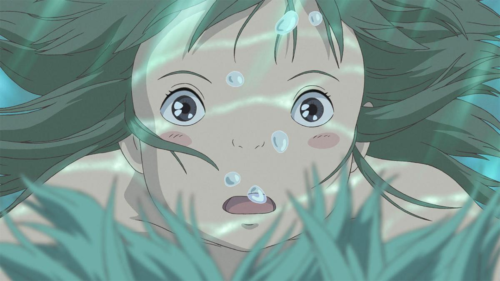

El viaje de Chihiro

Personajes
- Chihiro OginoLa protagonista de la cinta es Chihiro, una niña de 10 años, cuya historia arranca durante la mudanza con sus padres a otra ciudad. La chica está disgustada con la decisión y se lo muestra constantemente a sus padres en el trayecto en coche. Tratando de atajar el camino, se adentran en el bosque y dan con un pueblo aparentemente abandonado. Allí, los padres de Chihiro comienzan a alimentarse de la comida que hay en los puestos de la feria, sin pedir permiso. La chica se aleja a explorar y se encuentra con Haku, un chico misterioso que le advierte que debe salir de allí. Cuando regresa a dónde sus padres, estos se han convertido en cerdos por profanar este lugar sagrado, que pertenece a los dioses. Asustada, Chihiro acaba adentrándose en el mundo de los espíritus, donde deberá aprender a madurar para recuperar a sus padres y su antigua vida. Uno de los principales escenarios en los que se moverá es una tradicional casa de baños japonesa, regentaba por la tiránica bruja Yubaba. En este proceso, la personalidad de Chihiro se transforma: pasa de ser una niña mimada a una persona responsable y resolutiva. En cuanto a su aspecto, Chihiro de cabello castaño, ojos marrones y mejillas sonrosadas, con una cara infantil y regordeta. Al principio de la cinta, viste un atuendo sencillo con camiseta y pantalones cortos, pero durante su estancia en la casa de baños lleva un traje tradicional japonés.
- Haku Haku es un chico misterioso que se convierte en el guía de Chihiro en el mundo de los espíritus. Aparece por primera vez cuando Chihiro está explorando el pueblo y le advierte que debe cruzar el río antes del anochecer. Viendo que no lo hace, el joven guía a la inmadura Chihiro por el mundo de la casa de baños, diciéndole que necesita conseguir un trabajo para sobrevivir en este mundo alternativo. También le advierte a Chihiro que si olvida su nombre real, como le pasó a él, quedará atrapada en el mundo de los espíritus para siempre. En su momento fue aprendiz de la bruja Yubaba y comparte algunos de sus poderes. Haku parece algo mayor que la protagonista, con un pelo negro y liso en un bob y ojos verdes rasgados en su forma humana. Va vestido también con ropajes tradicionales blancos, con toques azules. Sin embargo, como integrante del mundo de los espíritus también se transforma en dragón: con un cuerpo blanco con escamas, coronado con una melena verde.
- YubabaEs la propietaria de la casa de baños y la principal antagonista de 'El viaje de Chihiro'. Sus capacidades mágicas le permiten "robar" los nombres de sus trabajadores, lo que los ata para siempre al balneario. Es especialmente desagradable con Chihiro cuando empieza a trabajar en su establecimiento, llamándola estúpida. Yubaba tiene una personalidad extremadamente autoritaria e intimidante y como muchos de sus empleados está obsesionada con el dinero. Esto contrasta con el cariño que demuestra por su hijo Bo, y su devastación cuando este se niega a ayudarla si sigue tratando mal a Chihiro. Su aspecto físico es el de una persona anciana y enorme: una cabeza inhumanamente grande con cabello largo y blanco recogido en un moño, una cara arrugada con una gran nariz en forma de gancho, con un vestido azul oscuro que lleva un broche. También se puede transformar en pájaro.
- ZenibaEs la hermana gemela de Yubaba, por lo que su aspecto físico es idéntico, salvo que Zeniba lleva gafas. Entra en acción cuando Haku roba su poderoso sello mágico para tratar de escapar con Chihiro del mundo de los espíritus. Aunque al principio parece que es igual de malvada que su hermana, a lo largo de la cinta se revela su verdadera naturaleza, como una mujer amable.